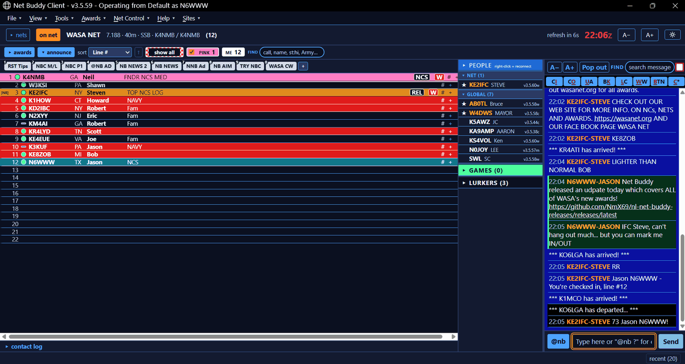
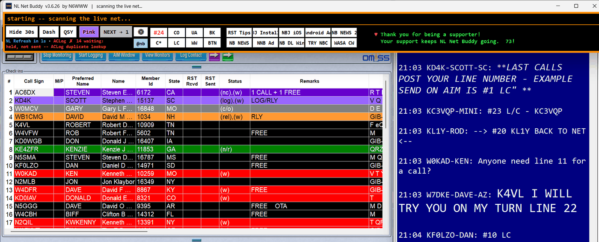
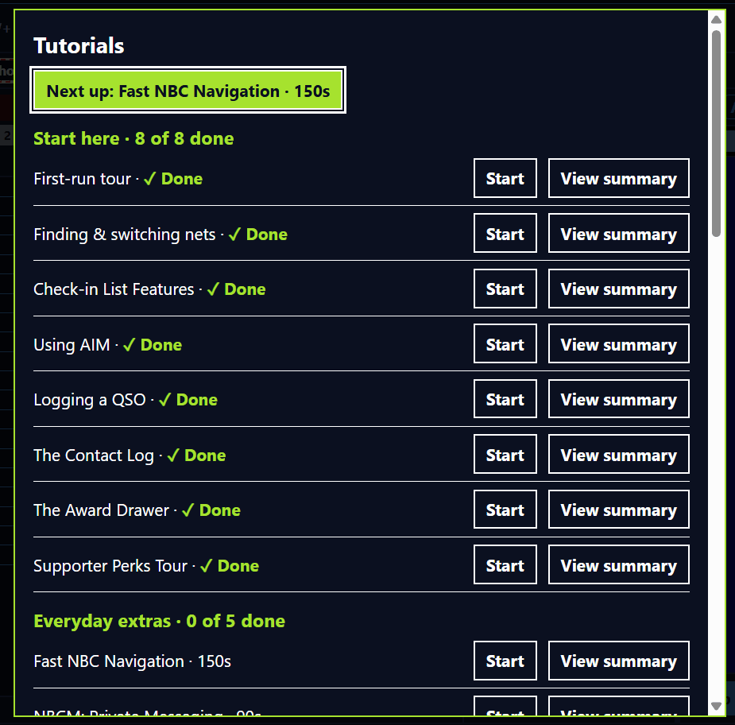
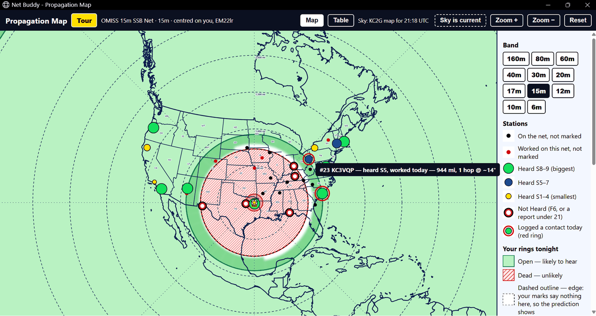
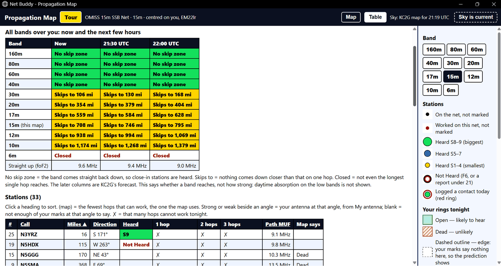
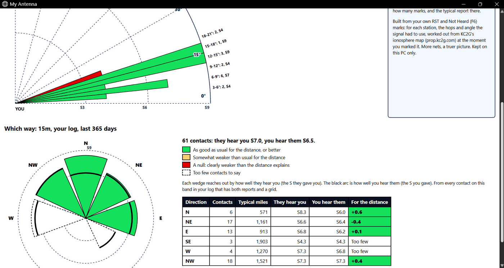

Two ways to run it
Run Net Buddy as its own net client on any computer, or beside NetLogger on Windows. Same awards, same tools, same log.
Net Buddy Client mode (NBC)


Net Buddy Client on a live net — click to enlarge
On Windows, Mac, Linux and Raspberry Pi. A full net client of its own — check in, chat, log and run the net with no NetLogger needed. It joins the same nets, so you are on the air with everyone else.
Net Buddy HUD (NL Companion mode)


The Net Buddy HUD over NetLogger — click to enlarge
On Windows, beside NetLogger. A thin strip pins to the top of your screen, watches NetLogger's check-in list and tells you who is worth working right now.
What it does
Net Buddy Client (NBC)
- The colour-coded check-in list, with the pink line followed for you
- The People rail: who on the net is running Net Buddy
- The net's AIM chat beside the list. Right-click any line or message for a station report, check-in history or QRZ
- Previous nets, saved nets and your log, all inside NBC
- 33 built-in tutorials on a practice net, so you can learn every feature without touching a live one


Built-in tutorials — click to enlarge
Propagation & Your Antenna
- Propagation map: tonight's net on a map centred on you — who is on, how well you hear them, and where the band is open or dead
- My Antenna: learns the take-off angles your antenna really works at, from the signal reports you log
- hops: how many hops a station takes, and the angle off your antenna
- Free Frequency Finder: the band with every POTA spot and running net drawn on it — click a clear spot and the rig goes there
- Radio control: the rig follows the net, through ACLog, Omni-Rig or Hamlib


Propagation map — click to enlarge


Every band, now and later — click to enlarge


My Antenna — click to enlarge
Award Hunting
- Ranks the live check-in list by what each station is worth to your awards
- Star the awards you're chasing, and see which check-ins fill them
- Shows the awards you are closest to finishing, from who is on right now
- Offline dashboard: every award, progress bars, per-band and per-year views
- Proof log for each award, and the OMISS application filled out as a ready-to-send PDF
- Right-click anyone for a station report: the bands you have them on, and the ones you still need
Running the Net
- TURN moves the pink line to the next station, posts their turn on AIM and names who is up next
- Leader keys: one-press check-in, last call, status, 73 and preamble
- Take actions straight off AIM. If someone posts “check me out” or “last call please”, do it in a few key presses — without even knowing their line number
- Net preamble and scripts, filled in live: call, band, frequency, Zulu time, relays and newcomers
- 10 fully customizable announcement buttons. No more copy/pasting!
- A Waiting Room for stations who stepped away, and check-in history for newcomers
@nb Quick Answers
- Type a question, get the answer just for you — or post it to the net
- dist, far, close: distance and beam heading to any check-in
- solar, bands, muf: band conditions right now
- ltg: the nearest lightning within 100 miles, and whether it is getting closer
- wx, sun, iss: weather, greyline, the next ISS pass
- who, qrz: licence and QRZ lookups for any line
Logging & Sync
- NB Sync: one contact log across your computers and your phone
- Sends contacts to N3FJP's ACLog, Ham Radio Deluxe, QRZ Logbook and K1ALF's OMISS tracker
- Works with any logger that accepts WSJT-X UDP QSO forwarding
- Reconcile: finds the contacts ACLog or QRZ is missing, and sends only those
- Log Check: compare your log with another operator's
- Tidy-up tools for duplicates and remarks, with a backup made before every change
Messenger & Games
- Private chat with the other stations on your net
- Directory of who else is running it
- No server to sign up for, and nothing to set up
- Games (beta) to play while you wait your turn: a trivia board and Farkle dice, with the stations already on your net
Easy to See and Use
- High contrast throughout
- Make the text bigger or smaller at any time
- Dark & Light modes
- Pop-out panels you can place and size anywhere
- Many keyboard shortcuts for fast actions and AIM messages!
Chase awards on 4 nets
187 awards, 202 certificates and 560 band endorsements — 762 things to earn, all tracked from your own log. Want Net Buddy to track awards for your net? Get in touch through N6WWW on QRZ.
OMISS
Old Man International Sideband Society
719
to earn
144 awards
159 certificates
560 band endorsements
WASA
Worked All States & Awards Net
26
to earn
26 awards
26 certificates
USTNET
United States Traffic Net
16
to earn
16 awards
16 certificates
HHH
Triple H Net
1
to earn
1 award
1 certificate
Get Net Buddy
Free, and there is no account to create. The download page lists every file — pick the one for your computer. The .nbp files there are updates for people who already have Net Buddy; you can ignore them.
Windows 10 or later
NL_Net_Buddy_Setup … .exe
Runs as Net Buddy Client mode (NBC), or as the Net Buddy HUD beside NetLogger.
Mac (Apple Silicon)
NetBuddyClient … macos-arm64.zip
Net Buddy Client mode (NBC).
Linux
NetBuddyClient … linux-x86_64.tar.gz
Net Buddy Client mode (NBC).
Raspberry Pi (64-bit)
NetBuddyClient … raspberry-pi-arm64.tar.gz
Net Buddy Client mode (NBC).
The Windows installer is unsigned, so Windows SmartScreen shows an “unknown publisher” warning — click More info, then Run anyway.
NB Junior — the phone app (beta)
NB Junior puts your log and the net's chat on your phone, and stays in step with your computers through NB Sync. It is not in the app stores yet; until it is, you can join the beta.
iPhone
- Install Apple's free TestFlight app from the App Store.
- On the iPhone, open the NB Junior TestFlight link and tap Accept, then Install.
Android
- Sign in with the Google account your Android phone uses.
- Join the testers group (tap Join group). The next step does not work without it.
- Open the NB Junior test page with that same account and tap Become a tester.
- Install NB Junior from the Play Store link on that page.
Please keep it installed: Google needs 12 testers for 14 days in a row before it will list the app for everyone.
Help and guides
Step-by-step instructions for everything above: the Net Buddy User Guide and the Net Buddy Client Guide. Inside NBC, Help → Tutorials walks you through every feature on a practice net.
Support
NetLogger first
None of this works without NetLogger. Every net you see here is carried on NetLogger's servers, and the current program is the work of AC0ZG. They ask for a $5 donation to keep those servers running — if Net Buddy is useful to you, that is the first place your support should go. 73 and thank you to them.
Net Buddy
NL Net Buddy and Ham Bites are free, built by N6WWW — a blind ham — for the community. If they're useful to you, donations go toward building a fully blind-accessible ham station so I can keep operating and making tools like these. 73, and thank you!